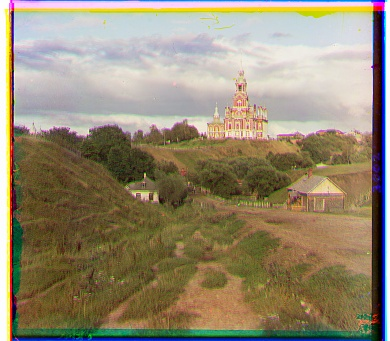
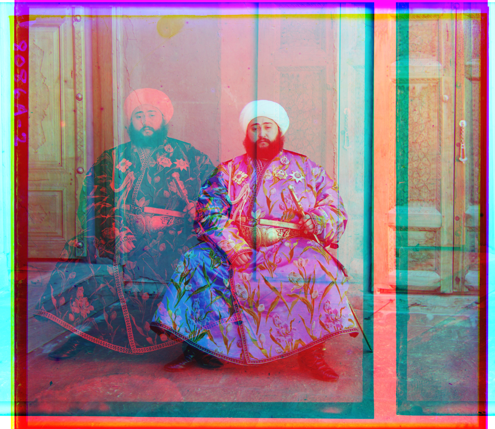
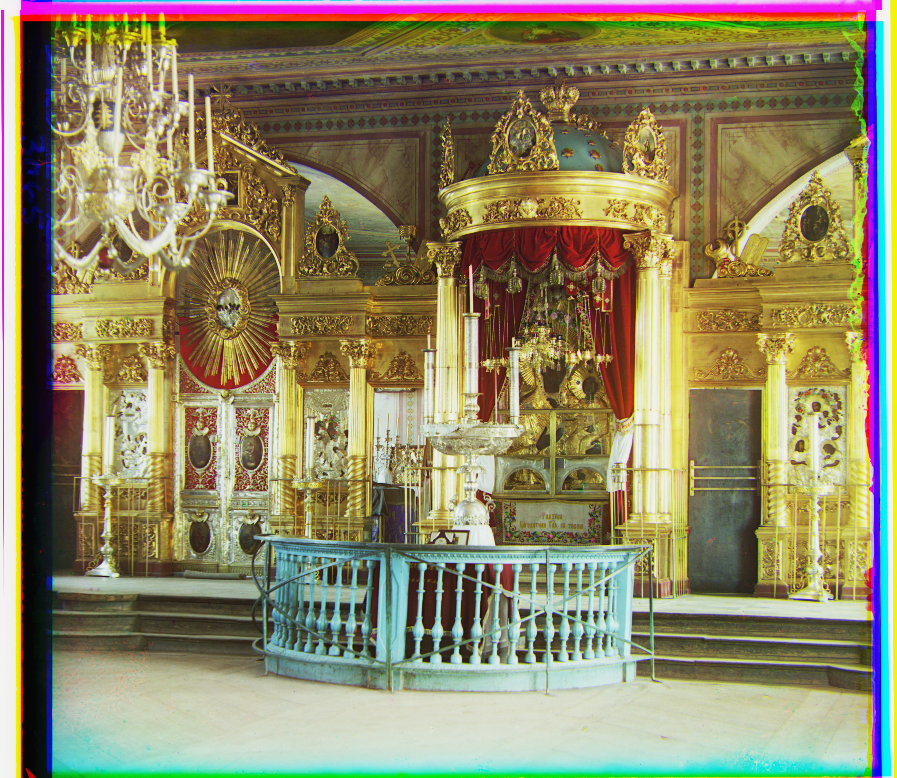
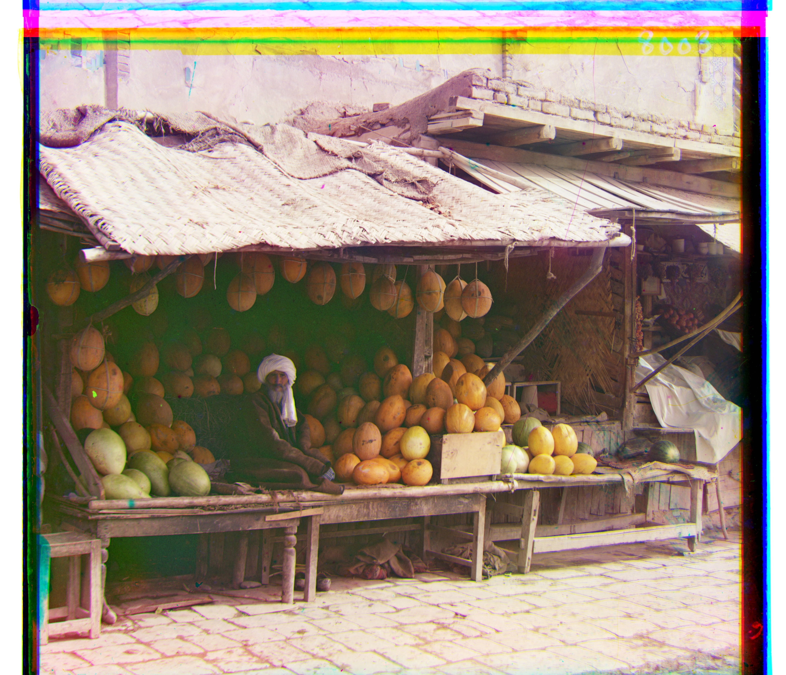
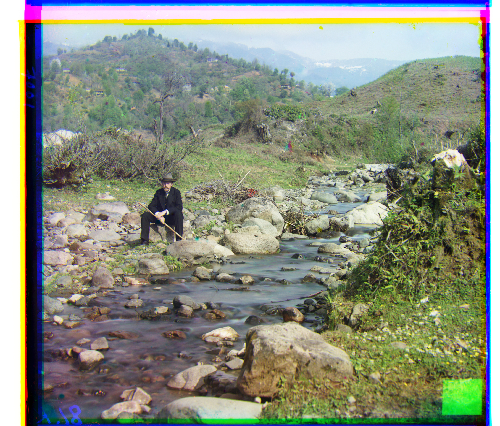
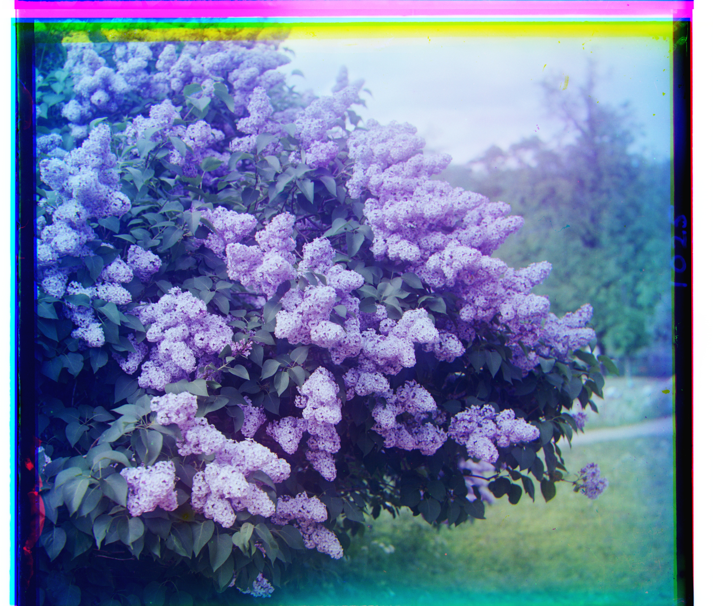
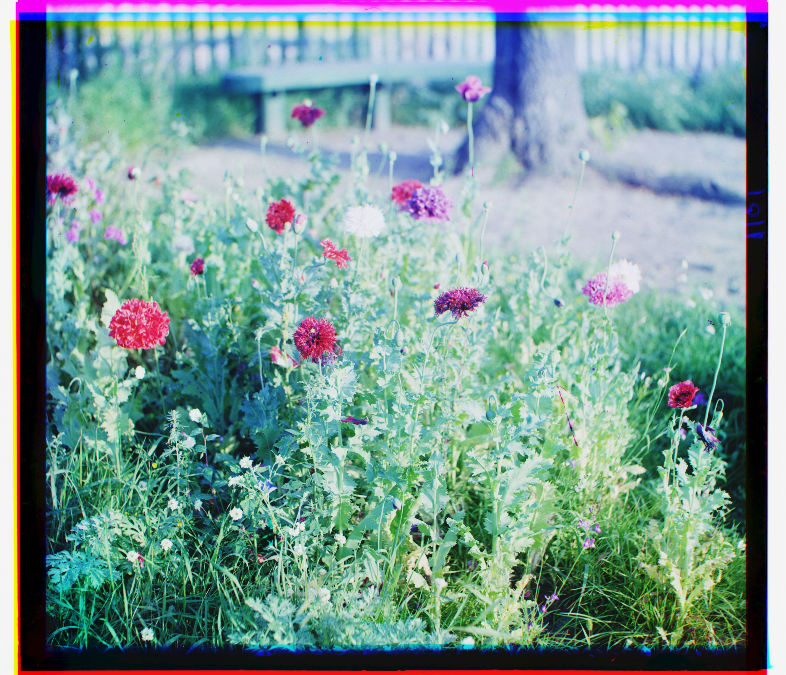
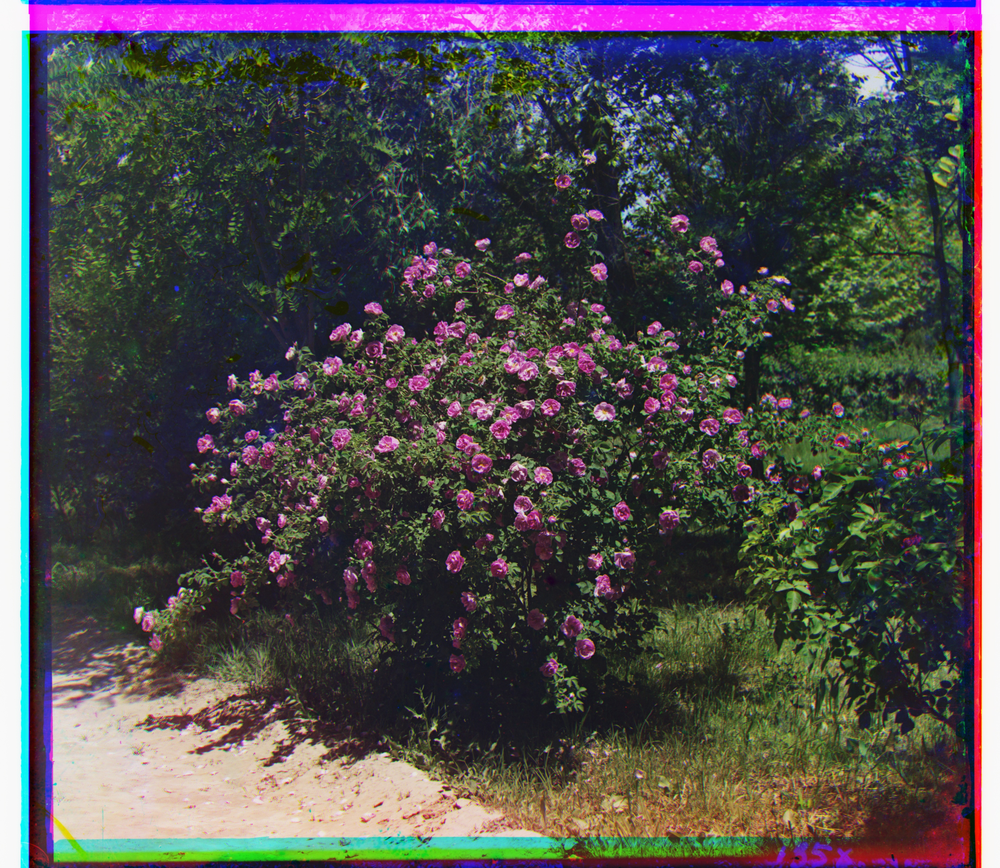

CS 180 · Fall 2026 · Project 1
Images of the Russian Empire
Colorizing the Prokudin-Gorskii photo collection
Overview
For this project I worked with the Prokudin-Gorskii collection. Around 1907 he travelled across the Russian Empire taking photographs in a pretty clever way: he shot the same scene three times in a row, each time through a different color filter, and recorded all three exposures onto one tall glass plate.
My goal was to turn those scans back into a single color photo. I split each scan into thirds to get the blue, green and red channels and stack them into one RGB image. The catch is that the camera shifted slightly between each exposure, so stacking the channels as they are gives you a blurry, color-fringed mess. So to accurately recreate the images, I had to create an algorithm that would align the images together properly and automatically give a finished aligned colored image.
Matching metric
First, I want to talk about the image matching metric that I chose. I used np.roll to move the images by a certain x and y and then scored itagainst the reference image by using the sum of squared differences.
Since we wanted the images to be as close to each other as possible, and idealy right on top of each other, the lowest score is taken.
Additionally, I want to mention that the score is computed on a cropped region rather than the whole frame. As I was running my code on the example images, I realized that some of the scans have thick plate borders that are different in contrast than the actual photograph. For example, for on monastery.jpg, the outer 10% of the frame holds about a third of the pixels but also 80% of the total squared error. Cropping makes this image turn out a lot more aligned.
Single-scale alignment
Now, to talk about the first part of this project: creating a single-scale alignment algorithm. Since we only need to use this algorithm on the smaller .jpg files, I run an exhaustive search over [−15, 15] in both cardinal directions and compare my previously mentioned matching metric to find the ideal coordinates.


| Image | Green offset | Red offset | Search window | Candidates |
|---|---|---|---|---|
| cathedral | (5, 2) | (12, 3) | ±15 | 961 |
| monastery | (−3, 2) | (3, 2) | ±15 | 961 |
| tobolsk | (3, 3) | (6, 3) | ±15 | 961 |
Offsets are (rows, columns) — the arguments passed to
np.roll along axes 0 and 1.
This part went pretty smoothly, the only issue was that the monastery.jpg, as already mentioned above. In order to get those images to line up properly, I had to implement cropping of the borders so that the algorithm was able to more accurately calculate the best coordinate to shift the image to. This entire section is commented out in the main code and goes from line 66 to 80. In order to run it, uncomment lines 66-80 and comment lines 63-64.
Image pyramid
Previously, the naive looping algorithm was able to run across the smaller files in a decent amount of time. However, the .tif plates are much larger than the .jpg plates and would be unreasonable to run the naive algorithm on.
Instead, align recursively halves the image until the smaller side drops below 100 pixels, searches exhaustively using the naive algorithm at that coarsest level, and then on the way back up doubles the estimate it received and searches a 3x3 window around it.
A displacement that was accurate at half resolution can only be off by about a pixel once doubled, so searching around in a radius of 1 is enough above the base level in order to get the best coordinate estimates.
The recursion returns a displacement rather than an aligned image, so that each level has something to double. The rolling happens once, at the end.
Computed offsets
| Image | Source | Green offset | Red offset | Channel size | Time |
|---|---|---|---|---|---|
| cathedral | cathedral.jpg | (3, 2) | (11, 3) | 390×341 | 0.1s |
| church | church.tif | (25, 4) | (58, −4) | 3634×3202 | 0.7s |
| emir † | emir.tif | (49, 24) | (17, −825) | 3702×3209 | 0.5s |
| harvesters | harvesters.tif | (59, 16) | (123, 13) | 3683×3218 | 0.7s |
| icon | icon.tif | (41, 17) | (89, 23) | 3741×3244 | 0.8s |
| ilemselga | ilemselga.tif | (40, 7) | (130, 11) | 3800×3270 | 0.8s |
| melons | melons.tif | (81, 10) | (178, 13) | 3770×3241 | 0.6s |
| monastery | monastery.jpg | (−3, 2) | (3, 2) | 391×341 | 0.0s |
| religous_painting | religous_painting.tif | (27, 3) | (68, 7) | 3742×3193 | 0.7s |
| self_portrait | self_portrait.tif | (78, 29) | (176, 37) | 3810×3251 | 1.0s |
| siren | siren.tif | (49, −6) | (95, −25) | 3817×3250 | 0.7s |
| three_generations | three_generations.tif | (53, 14) | (112, 11) | 3714×3209 | 0.5s |
| tobolsk | tobolsk.jpg | (3, 3) | (6, 3) | 396×341 | 0.0s |
| wharf | wharf.tif | (15, −7) | (82, −16) | 3761×3244 | 0.6s |
† See Known issue.
Results
Click any image for the full-size file.
{kind=link}


{kind=link}

See Known issue.

{kind=link}


{kind=link}



{kind=link}

{kind=link}



Chosen images
Three more plates from the Library of Congress archive, run through the same code.
| Image | Source | Green offset | Red offset | Channel size | Time |
|---|---|---|---|---|---|
| example1 | example1.tif | (8, 8) | (60, 13) | 3771×3241 | 1.4s |
| example2 | example2.tif | (52, 1) | (113, −24) | 3695×3208 | 1.4s |
| example3 | example3.tif | (28, 24) | (46, 48) | 3713×3222 | 1.4s |
{kind=link}

{kind=link}


Known issue
emir.tif does not align: green lands correctly at (49, 24) but red ends up at (17, −825). Since the loss that I used (sum of squared differences) compares raw brightness, it wasn't able to pick up on Emir's robe as it is
near-white on the blue plate and near-black on the red one. The actual correct alignment would then want a large squared difference whereas my algorithm is searching for the smallest squared differece.